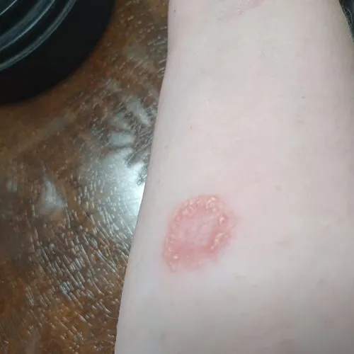

真菌 · 真菌界
红色毛癣菌 Trichophyton rubrum

皮肤癣菌，菌落白色棉絮状、背面呈红色，侵犯人手足皮肤与甲，引起脚气、股癣与灰指甲，具传染性。
- 分类
- 门子囊菌门纲散囊菌纲目散囊菌目科分节癣菌科属毛癣菌属
- 栖息环境
- 人类皮肤、指（趾）甲与角质层，温暖潮湿环境易繁殖
- 地理分布
- 世界性分布，热带与亚热带感染率更高，中国南方常见
- 保护级别
- 暂无评估；作为人类病原广泛存在
物种志
红色毛癣菌的菌落生长较慢，表面白色至淡粉色、棉絮状或粉末状，背面呈葡萄酒红色至暗红色，是其重要鉴定特征。镜下可见分隔菌丝与泪滴状小分生孢子，大分生孢子少见、呈铅笔状。它分泌角质酶，能分解皮肤与甲板中的角蛋白。
红色毛癣菌是最常见的人类皮肤癣菌，引起足癣（脚气）、股癣、体癣与甲癣（灰指甲），全球感染人数以亿计。它通过直接接触或共用鞋袜、毛巾传播，在温暖潮湿环境中易繁殖。感染后皮肤脱屑、瘙痒、起水疱，甲板增厚变脆。治疗需外用或口服抗真菌药，疗程常需数周至数月，且易复发。它不侵入深层组织，但免疫低下者偶可致深部感染；保持足部干燥、不共用鞋袜是最有效的预防。
形态与习性
- 菌落白色棉絮状，背面葡萄酒红色
- 镜检分隔菌丝与泪滴状小分生孢子
- 侵犯部位足、股、体皮肤与指（趾）甲
- 所致疾病脚气、股癣、体癣与灰指甲
- 传播接触传染，共用鞋袜毛巾易传播
- 防治保持干燥、不共用鞋袜，抗真菌治疗
趣味知识
- 红色毛癣菌菌落背面呈葡萄酒红色，这是它区别于其他癣菌的重要特征。
- 它靠分泌角质酶分解皮肤和指甲的角蛋白，所以专挑手足和甲板下手。
- 脚气反复发作、灰指甲久治不愈，很多时候就是它在角质层里“扎根”了。
- 它通过共用拖鞋、毛巾传播，保持干燥和分用物品比吃药更管用。